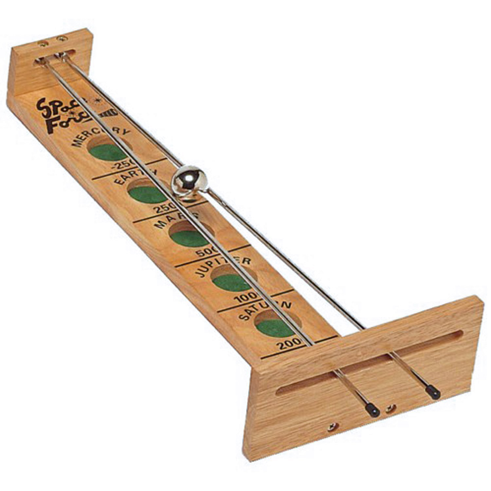

Keyword: Machine dynamics, Non-linear control, Mathematica, Arduino
The classic game Shoot-the-Moon has interesting dynamics despite its simple structure, consisting of a steel ball rolling on two cylindrical rods. The two sloped rods are hinged at the lower ends and allowed to freely slide in a slot at the higher end. The ball can amazingly roll upward along the rods under carefully manipulation of the rods. There is also an interaction between ball rotation and translation that cause the ball to “shoot” (quickly accelerate).
The kinematics of the system are developed for the Shoot-the-Moon and then equations of motion are derived using Lagrangian approach. The constrain is that the ball has to be attached to the rod and the system is non-holonomic.
Two controlles based on the dynamic model are created. The first one is called Linearized Position Regulator which uses a local linearization at an equiibrium point of the dynamics. What this controller can do is given then current location of the ball and a random target position along the rod, the controller will try to make the ball to stablize around the target postion by maanuvering the rod. The controll loop for this method is like this: The contorl loop above indicates a full state feed back control for a linearized system. By placing poles, we can get the gain for the system. Two pictures below are the simulation results using the Linearized Position Regulator method: The figure on the left is the reference trejactory of the ball on the rod. If the ball is at origin of the rod, then the controller will try to push the ball to reach the reference position. The second one is called Position Tracking Controller and what it does is that given a position on the rod, the controller can return a desired accerlation by changing the rod angle. The controll loop for this method is like this: Block "T" is the function which takes a referene accelaration with feedback and returns a theta which is the angle between the rods.Two pictures below are the simulation results using the Position Tracking Controller method: Position Tracking Controller has faster response than Linearized Position Regulator meaning it can allow the ball to do complex motion on the rod, for example a sinosodial motion. However, Linearized Position Regulator is much more realible becuase the Position Tracking Controller includes the sub-process of finding a root of a non-linear equation and it cannot always gurarrente to return a solution. Therefore, it makes Position Tracking Controller difficult to balance the the ball when it is far away from the origin. The mechenical design of the system is based on using stepper motor, pulleys and belts. The stepper motor is NEMA 23 unipolar steppr motor which has 200 steps to finish one revolution. I used DRV8835 as the H-brdige to interface the motor with my microcontroller and I progrmmed the microcontroller to be able to control the stepper motor to half-step, meaning the it takes 400 steps for motor to finish one revolution. There are two pulleys in the system, one is attched to the motor and another one is the passive pulley. A timing belt is attached on those pulleys and the space between the pulley is adjusted so that it would cause enough tension on the belt. Two rods were attached to the belt while one is attached to the upper part of the belt and the other one is attached to the lower part of the belt. This configuration would allow the rod to move symmetrically in opposite direction when the motor is spinning. When all the parts of the system are well positioned, I sample the simulation trejactory and feed it into the motor. The video below shows my result.
Go BackCredit: This website is based on a theme created by Start Bootstrap